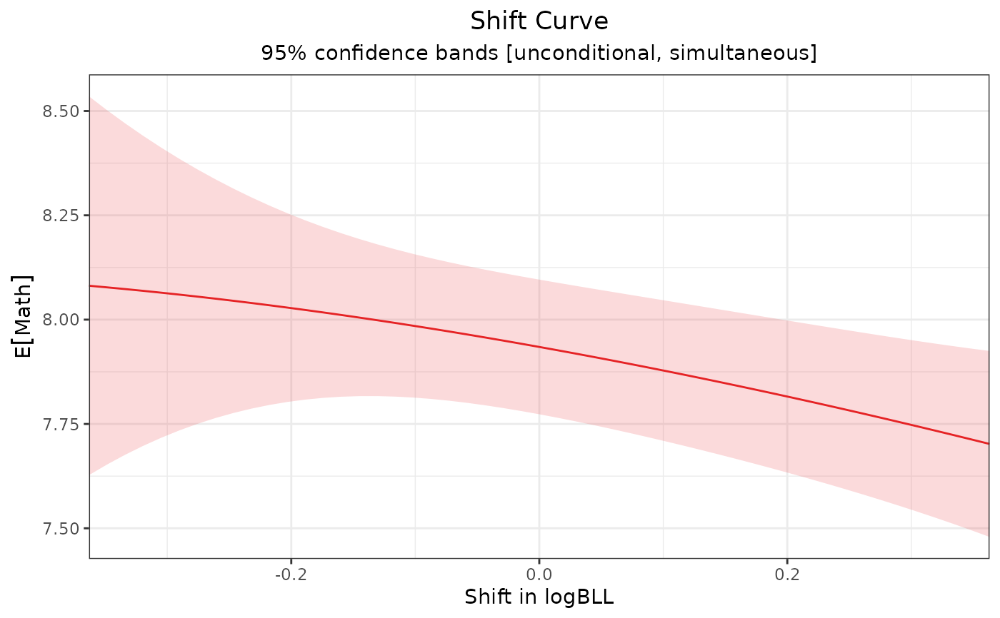
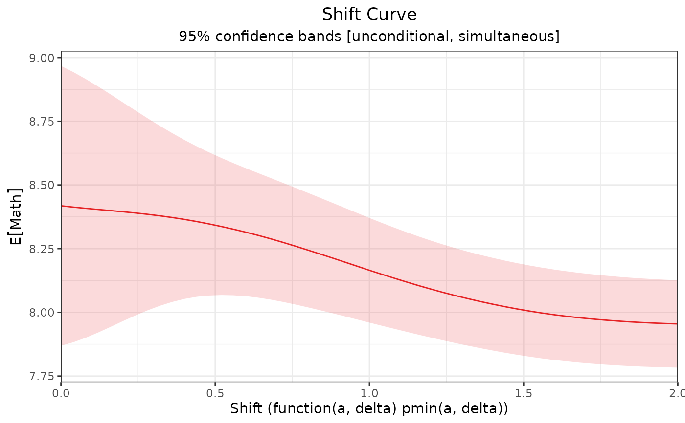

Estimates the shift curve for a fitted model object: the mean outcome that would be observed if every unit's treatment were shifted from its observed value, as a function of the size of the shift.
Usage
shift_curve(x, ...)
# Default S3 method
shift_curve(
x,
treat,
shift = NULL,
shift_fun = "additive",
vcov = "unconditional",
cluster = NULL,
type = NULL,
outcome = NULL,
data = NULL,
subset = NULL,
by = NULL,
wts = NULL,
n = 51,
fwb.args = list(),
...
)Arguments
- x
- ...
further arguments passed to
marginaleffects::get_predict().- treat
a string specifying the name of the treatment variable.
- shift
numeric; the sizes of the shift at which to compute the shift curve. Can be two numbers corresponding to the lower and upper bounds of the shift or a single number
scorresponding to the range from-stos. Whenshift_fun = "additive", a single number is in standard deviations of the treatment; otherwise, it is in the units of the shift. Default is .5 whenshift_fun = "additive", i.e., shifts of up to half a standard deviation of the treatment in either direction;shiftmust be supplied otherwise. See Details.- shift_fun
how each unit's treatment is to be shifted. Allowable options include
"additive"(the default), which adds the shift to the treatment,"multiplicative", which multiplies the treatment by 1 plus the shift (e.g., a shift of .1 is a 10% increase), and a function of two arguments, the vector of observed treatment values and a single value of the shift, that returns the vector of shifted treatment values."multiplicative"can only be used when the treatment is nonnegative, and the shifts cannot be below -1. See Details.- vcov
how the covariance matrix of the estimates should be computed. If
"unconditional"(the default for frequentist models), use the sandwich estimator including sampling uncertainty, with the HC2 small-sample adjustment when it is available (see Details). If"boot"or"fwb", use the traditional or fractional weighted bootstrap, respectively (both of which require the fwb package to be installed). Otherwise, may be a covariance matrix or other allowed input to thevcovargument ofmarginaleffects::get_vcov(). Can also be"none"to avoid computing the uncertainty. For Bayesian models, only"posterior", which uses the posterior of the estimates, and"none"are allowed. For models fit to multiply imputed data,"boot"and"fwb"are not allowed.- cluster
an optional data frame or one-sided formula with the clustering terms for cluster-robust inference. When
vcovis"unconditional", the CR2 small-sample adjustment is used when it is available (see Details). Whenvcovis"conditional", the covariance matrix of the model coefficients is computed usingsandwich::vcovCL()with its default type;vcovcan also be"HC0","HC1","HC2", or"HC3"to request that type fromsandwich::vcovCL()("HC2"and"HC3"are available only forlm()andglm()models). Other strings and functions supplied tovcovcannot be used withcluster.- type
character string indicating the type of prediction. Passed to
marginaleffects::get_predict(). When not supplied,"response"is used for predictions on the scale of the outcome variable, unless the model does not allow it (e.g.,MASS::polr()models), in which case the typemarginaleffects::predictions()uses by default for the model is used; for multinomial and ordinal models, both give the probability of each category of the outcome. Other options might include"link"for the linear predictor or, for some ordinal models,"mean"for the expected value of the outcome. This argument is ignored forlmobjects.- outcome
optional; for models that give a separate prediction for each category of the outcome (e.g., multinomial and ordinal models), a character vector naming the categories for which to compute the effect curve. Default is to compute the effect curve for every category. See the section Categorical outcomes in Details of
adrf().- data
an optional data frame containing the observations originally used to fit the outcome model supplied to
x. This is needed when the dataset cannot be recovered from the model (e.g., when the model was fit inside a function or is not supported by insight), and it is used to find variables named insubset,by,wts, andclusterthat are not in the dataset used to fit the model. In most cases, this does not need to be supplied.- subset
an optional logical expression indicating the subset of data to use for estimation. Will be evaluated in the environment of the original dataset supplied to the model fitting function. Can also be a vector of row numbers or row names; logical vectors and row numbers refer to the units used to fit the model (i.e., excluding any dropped because of missing values), and row names refer to the original dataset.
- by
optional variable(s) over which to group the estimation. Can be a character vector or one-sided formula.
- wts
optional weights used to generalize the effect curve to a weighted population. Can be a numeric vector, the name of a variable in the original dataset,
TRUEto use the weights used to fit the model, orFALSEfor no weights. The default depends on the model; see Details.- n
integer specifying the number of equally spaced grid points on which to compute the effect curve anchor points. Must be between 2 and 1000. Default is 51; higher numbers increase computation time and size of the resulting object but improve accuracy.
- fwb.args
an optional list of arguments to be passed to
fwb::fwb()whenvcovis"boot"or"fwb". Whenclis not included and a future plan with more than one worker is set,cl = "future"is used; see the section Parallelization with future in Details.
Value
An object of class shift_curve, which inherits from adrf_curve and effect_curve. Its first argument is named shift rather than after the treatment, so estimates are requested as, e.g., f(shift = c(-.2, 0, .2)). See effect_curve for details on this function and its outputs.
Details
shift_curve() estimates \(\psi(\delta) = E[Y(g(A, \delta))]\), the mean potential outcome when each unit's treatment \(A\) is replaced by \(g(A, \delta)\), where \(g\) is the function supplied to shift_fun and \(\delta\) is the shift. With shift_fun = "additive", \(g(a, \delta) = a + \delta\), so \(\psi(\delta)\) is the mean outcome if every unit's treatment were increased by \(\delta\) (or decreased, when \(\delta\) is negative); \(\psi(0)\) is the mean outcome under the treatment actually received. The estimate at each shift is the average of the predicted outcomes computed with each unit's treatment set to its shifted value, in the same way that adrf() averages predicted outcomes with every unit's treatment set to the same value. Such interventions, which depend on the treatment each unit would have received, are known as modified treatment policies or shift interventions (Díaz Muñoz & van der Laan, 2012; Haneuse & Rotnitzky, 2013).
Whereas the ADRF at a given treatment value requires that every unit could have received that value, a shift curve only requires that units could have received treatment values near those they actually received, so it involves less extrapolation from the outcome model when the treatment is strongly related to the covariates (Lundberg & Brand, 2026). This holds only for small shifts; a large shift moves some units to treatment values that units like them rarely receive, in which case the shift curve depends on extrapolation just as the ADRF does. The derivative of the shift curve at 0 is the average derivative effect (ADE), which can be computed using ade().
shift and shift_fun
When shift is a single number and shift_fun = "additive", the shifts are in standard deviations of the treatment, computed over the units in subset, weighted by wts, and pooled over the subgroups defined by by (and over the imputed datasets for multiply imputed data), so that every subgroup has the same grid of shifts and their shift curves can be contrasted. The grid itself is in the units of the treatment and is treated as fixed in computing standard errors, as the range of the ADRF is in adrf(). With the default n (odd) and a symmetric range, a shift of 0 is one of the grid points.
A function supplied to shift_fun is called once for each grid value of the shift with the observed treatment values of all units in subset (in all subgroups defined by by together), so it can be used to define other modified treatment policies. For example, shift_fun = function(a, delta) pmin(a, delta) caps every unit's treatment at delta, so the shift curve gives the mean outcome as a function of the cap, and shift gives the range of caps to consider. The function must return a finite treatment value for every unit at every shift, and the outcome model must be able to make predictions at those values. The function must also be deterministic (i.e., it must give the same result each time it is called with the same inputs). When it depends on the distribution of the observed treatment values (e.g., shifting each unit to a quantile of the treatment), that dependence is treated as fixed in computing standard errors. ade() can only be used when a shift of 0 leaves every unit's treatment unchanged, which is not the case for a cap.
Inference
The options for vcov are the same as for adrf(). Unconditional standard errors account for the sampling of both the covariates and the treatment, since the shifted treatment of each unit depends on the treatment it received.
Once computed, a shift curve can be used with the other functions that take an effect_curve object. reference_curve() with reference = 0 gives the differences between the mean outcome under each shift and under the treatment actually received (i.e., the effect of each shift), summary.effect_curve() tests whether the shift curve is flat (i.e., whether no shift in the range changes the mean outcome), and curve_contrast() compares shift curves computed within subgroups.
Parallelization with future
The bootstrap replicates, the predictions for Bayesian models, the numerical derivatives used in the delta method, and the analyses of the imputed datasets run in parallel when a future plan with more than one worker is set, and one set.seed() reproduces the result either way. See the section Parallelization with future in Details of adrf().
References
Díaz Muñoz, I., & van der Laan, M. (2012). Population intervention causal effects based on stochastic interventions. Biometrics, 68(2), 541–549. doi:10.1111/j.1541-0420.2011.01685.x
Haneuse, S., & Rotnitzky, A. (2013). Estimation of the effect of interventions that modify the received treatment. Statistics in Medicine, 32(30), 5260–5277. doi:10.1002/sim.5907
Lundberg, I., & Brand, J. E. (2026). Causal inference with a continuous treatment: Addressing positivity constraints, nonlinearity, and effect heterogeneity. Sociological Methodology, 56(2), 206–236. doi:10.1177/00811750261459364
See also
ade()for computing the average derivative effect from a shift curveadrf()for estimating the average dose-response functionreference_curve()for computing the effect of each shift relative to no shiftplot.effect_curve()for plotting the shift curvesummary.effect_curve()for testing hypotheses about the shift curvemarginaleffects::avg_comparisons()for computing the effect of a single shift with conditional inference
Examples
data("nhanes3lead")
fit <- lm(Math ~ poly(logBLL, 5) *
Male * (Age + Race + PIR +
Enough_Food),
data = nhanes3lead)
# Mean Math score when every unit's logBLL is
# shifted by up to half a standard deviation
sc <- shift_curve(fit, treat = "logBLL")
sc
#> An <effect_curve> object
#>
#> - curve type: shift curve
#> - response: Math
#> - treatment: logBLL
#> - shift: additive
#> + range: -0.3631 to 0.3631 (-0.5 to 0.5 SD)
#> + grid points: 51
#> - sample size: 2,521
#> - inference: unconditional (HC2)
#>
plot(sc)

# Effects of shifts relative to no shift
reference_curve(sc, reference = 0)(shift = c(-.3, .3)) |>
summary()
#> Shift Curve Reference Estimates
#> ─────────────────────────────────────────────────────────
#> shift Estimate Std. Error t P-value CI Low CI High
#> -0.3 0.1285 0.1256 1.023 0.4408 -0.1441 0.4011
#> 0.3 -0.1868 0.0499 -3.744 0.0003 -0.2951 -0.0785
#> ─────────────────────────────────────────────────────────
#> Inference: unconditional, simultaneous
#> Confidence level: 95% (t* = 2.171, df = 2437)
#> Reference: shift = 0 | Null value: 0
# Average derivative effect
ade(sc) |>
summary()
#> Average Derivative Effect Estimates
#> ────────────────────────────────────────────────────
#> Estimate Std. Error t P-value CI Low CI High
#> -0.5335 0.2142 -2.4907 0.0128 -0.9536 -0.1135
#> ────────────────────────────────────────────────────
#> Inference: unconditional, pointwise
#> Confidence level: 95% (t* = 1.961, df = 2437)
#> Null value: 0
# Mean Math score when logBLL is capped at
# each value from 0 to 2
sc_cap <- shift_curve(fit, treat = "logBLL",
shift = c(0, 2),
shift_fun = function(a, delta) pmin(a, delta))
plot(sc_cap)
